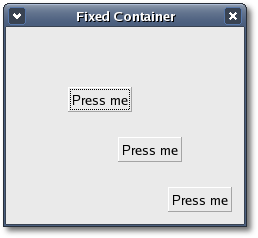

Fixed
Container
The
Fixed container allows you to
place widgets at
a fixed position within its window, relative to its upper left hand
corner. The position of the widgets can be changed dynamically. There
are only a few methods associated with the fixed widget.
You can create a new Fixed widget with the following
constructors:
Fixed();
Fixed(Widget& widget, int x, int y);
The
first constructor creates an
empty fixed
container and the second creates a fixed container an places the
specified
'widget'
fixed at position 'x' and 'y'.
void
put(Widget& widget, int x, int y);
void move(Widget& widget, int x, int y);
The put() method places widget in
the container fixed at the
position specified by x and y. The move() method allows the specified
widget to be moved to a new
position.
void
set_has_window(bool has_window);
bool get_has_window() const;
Normally,
Fixed widgets don't have
their own X
window. Since this is different from the behaviour of Fixed widgets in
earlier releases of GTK, the method set_has_window() allows
the creation of Fixed widgets with their own window. It has to be
called
before realizing the widget.
Fixed
Container Example
The following example illustrates
how to use the Fixed Container. It
displays a window that contains three buttons inside a fixed container.
Each time you click on a button it moves to a new fixed position.
The
header file for the Fixed container example
is
<fixed.hh>:
#include
<xfc/main.hh>
#include <xfc/gtk/button.hh>
#include <xfc/gtk/fixed.h>
#include <xfc/gtk/window.hh>
using namespace Inti;
class FixedWindow : public Gtk::Window
{
int x;
int y;
Gtk::Fixed *fixed;
protected:
void
on_move_button(Gtk::Button *button);
public:
FixedWindow();
virtual ~FixedWindow();
};
and the source file is
<fixed.cc>:
#include
"fixed.hh"
FixedWindow::FixedWindow()
: x(30), y(50), fixed(0)
{
set_title("Fixed Container");
set_border_width(10);
// Create a Fixed
Container
fixed = new
Gtk::Fixed;
add(*fixed);
fixed->show();
for (int i = 1 ; i <= 3 ; i++)
{
//
Creates
a new button with the label "Press me"
Gtk::Button *button = new
Gtk::Button("Press me");
// When
the button receives the "clicked" signal, it will call the
move_button()
slot
//
passing it the Fixed Container
as its argument.
button->signal_clicked().connect(sigc::bind(sigc::mem_fun(this,
&FixedWindow::on_move_button), button));
// This
packs the button into the fixed containers window.
fixed->put(*button, i * 50, i
* 50);
// The
final step is to display this newly created widget.
button->show();
}
}
FixedWindow::~FixedWindow()
{
}
void
FixedWindow::on_move_button(Gtk::Button *button)
{
x = (x + 30) % 300;
y = (y + 50) % 300;
fixed->move(*button, x, y);
}
XFC_MAIN(FixedWindow)
Compiling Fixed
If you compiled and installed XFC
yourself, you will find the source
code for Fixed in the
<examples/howto/fixed> source directory along with a Makefile.
If
XFC came pre-installed, or you installed it from an RPM package, you
will
find the source code in the
</usr/share/doc/xfcui-X.X/examples/howto/fixed> subdirectory.
In
this case you will have to create the Makefile yourself (replace X.X
with the
version number of the libXFCui library you have installed).
To create a Makefile for Fixed, add the following lines to a new
text
file
and save it using the name "Makefile":
CC
= g++
CFLAGS = -Wall -O2
fixed: fixed.cc fixed.hh
$(CC) fixed.cc -o fixed $(CFLAGS)
`pkg-config
xfcui-X.X --cflags --libs`
clean:
rm -f *.o fixed
If you cut and paste these lines
make sure the whitespace before $(CC)
and rm is a tab character. When you
compile and run this program you will see the following window appear:

The XFC_MAIN macro is a
convenience macro that
writes a simple main function, its only argument is the name of the
main
window class. The macro is defined in <xfc/main.hh>
as:
#define
XFC_MAIN(MainWidget)\
int main (int argc, char *argv[])\
{\
Xfc::Main::init(&argc,
&argv);\
MainWidget main_widget;\
main_widget.signal_destroy().connect(sigc::ptr_fun(&Xfc::Main::quit));\
main_widget.show();\
Xfc::Main::run();\
return 0;\
}
Most
main functions in C++ are as simple as this because all the creation
work for the main window is done inside its constructor, not the main
function.
| Copyright
© 2004-2005 The XFC
Development Team |
Top
|
XFC
4.4
|
|